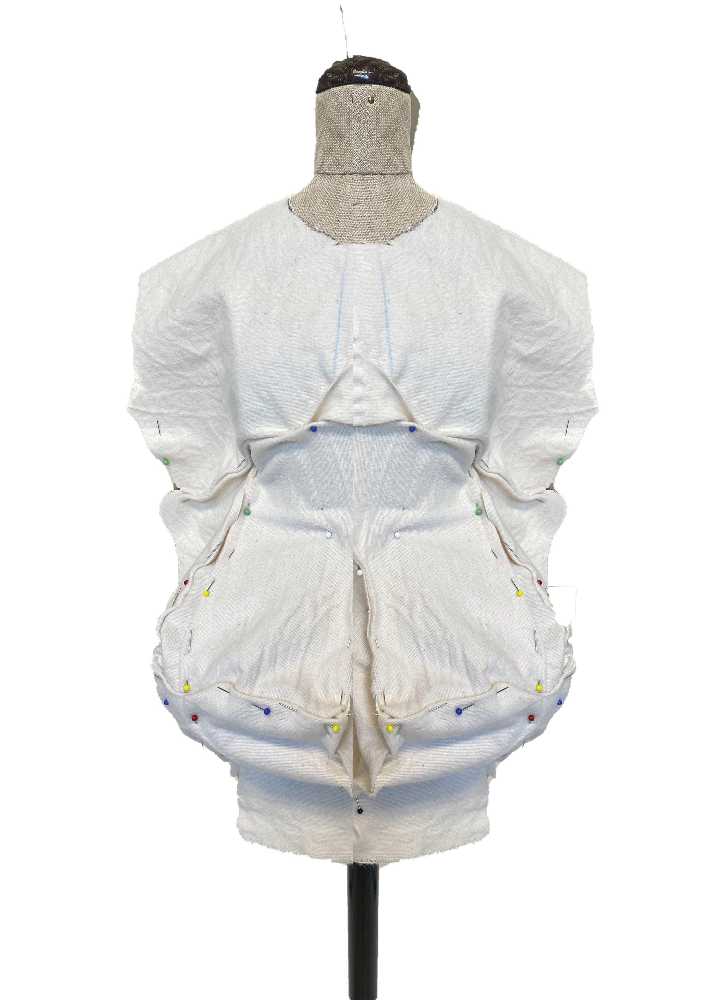

As a creative mind I find it important to share insights of my work. Besides the highlighted projects I want to present my other works with provided process, explaining my concept and steps taken. It is my timeline showcasing my progress over the years.
Click on a picture to see details of each project.

DUVET ASSIGNMENT
first project revolving around volume and silhouette experiments

CIRCULAR JACKET
A personal take on a puffer jacket

T-SHIRT RECONSTRUCTION
designing a collection based on an archetypical garment

MOULAGES

PRINTS ASSIGNMENT
discovering the captivating abilities of prints

1ST YEAR COLLECTION
A summary of all executed looks from first year in fashion design department.

LATEX EXPERIMENTS
investigation of using latex/rubber in combination with textiles

FOUR SLEEVES SWEATER
a take of functionality

TECHNICAL DRAWINGS ASSIGNMENT
designing a collection in illustrator

CONSTRUCTING AN FULL OUTFIT
ann assignment in which based on moulages and draping I designed and executed a full outfit

FUTURE OF FASHION
A digital collection of 60 looks contemplating on the future of human development and approach towards fashion.

0 WASTE T-SHIRT
designing a pattern that would limit fabric of a T-shirt to zero